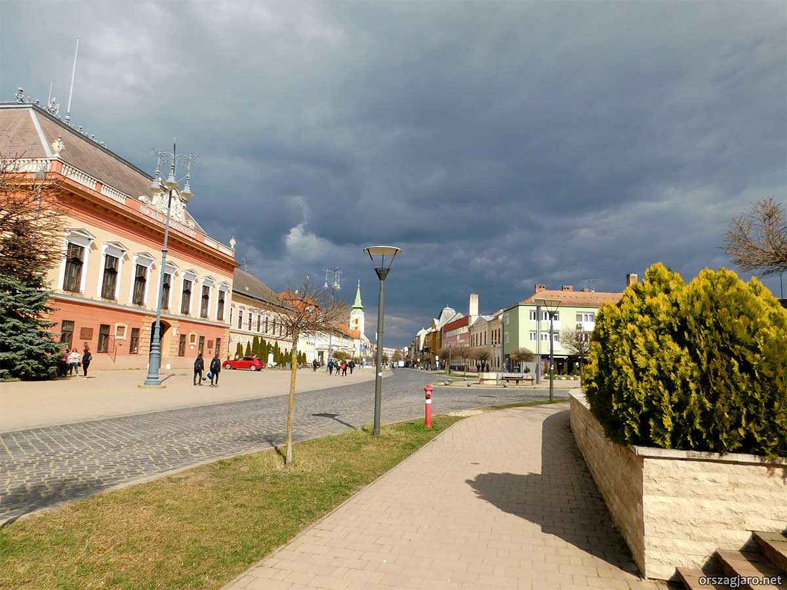
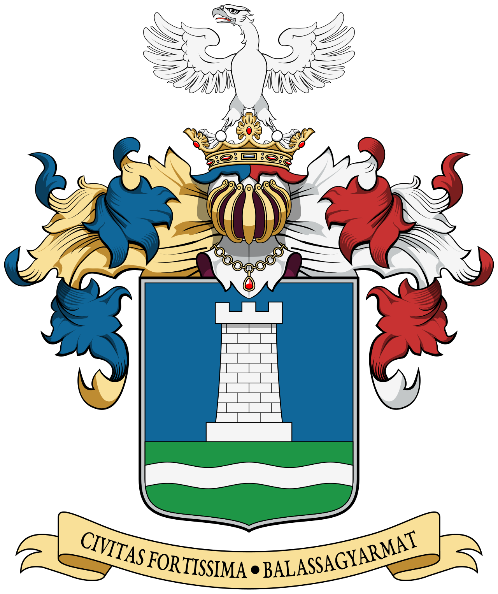

Palóc Múzeum
Magyarország egyik legjelentősebb néprajzi gyűjteménye, a palóc kultúra, viselet és néphagyományok teljes tárháza. 1891 óta gyűjti a térség tárgyi emlékeit.
A Palócok Fővárosa • Nógrád vármegye
Balassagyarmat Észak-Magyarország egyik legrégebbi és legjelentősebb városa, Nógrád vármegye székhelye. A Ipoly folyó mentén fekvő, festői környezetű kisváros a Cserhát és a Börzsöny találkozásánál helyezkedik el, mindössze néhány kilométerre a szlovák határtól.
A város büszkén viseli a „Palócok Fővárosa" nevet, utalva az itteni palóc népcsoport gazdag hagyományaira, jellegzetes viseletére, dalkincsére és kézműves kultúrájára. A Palóc Múzeum az egyik legnagyobb és legjelentősebb néprajzi gyűjtemény az országban.
Balassagyarmat a határ menti együttműködés szép példája: a szomszédos szlovák Ipeľské Predmostie és Veľký Krtíš városával élénk kapcsolatot ápol, a közös rendezvények és a gyalogos határátkelő révén is.
„Balogh Ádám, Bottyán János, Bercsényi Miklós – e vidék nemcsak természeti szépségeivel, hanem hőseivel is gazdagította Magyarországot." — Nógrád vármegyei mondás
Magyarország egyik legjelentősebb néprajzi gyűjteménye, a palóc kultúra, viselet és néphagyományok teljes tárháza. 1891 óta gyűjti a térség tárgyi emlékeit.
A város szívében álló barokk stílusú katolikus templom, amelynek tornya meghatározza a városképet. Belsejét értékes freskók és szobrok díszítik.
Az Ipoly folyó menti területek kiváló lehetőséget nyújtanak kerékpározáshoz, horgászathoz és természetjáráshoz. Az Ipoly völgye védett természeti terület.
A 19. századi klasszicista városháza és a felújított főtér a város közigazgatási és kulturális szíve. Nyáron számos rendezvénynek ad otthont.
A neves drámaíró, Az ember tragédiájának szerzője e vidékről származik. A művelődési ház az ő nevét viseli, rendszeres kulturális programokkal.
A gyalogos határátkelőn átjutva megismerhető az Ipoly másik partján fekvő szlovák Ipeľské Predmostie is – különleges kétnemzeti élmény.

A mai Balassagyarmat területén már az Árpád-korban megtelepültek éltek. A „Gyarmat" helynév avar-kori törzsnévre vezethető vissza.
A Balassa (Balassi) nemes família birtoka. Róluk kapta a város az előnevét – innen az összetett elnevezés: Balassa + Gyarmat.
Török hódoltság időszaka. A várost többször feldúlják, de a palóc népi kultúra megőrzi folytonosságát.
II. József rendeletével Balassagyarmat mezővárosi, majd hamarosan szabad királyi városi rangot kap.
A szabadságharc idején a város több csata színhelye. Görgei Artúr seregei is átvonulnak erre.
Az Ipoly határfolyóvá válik. Balassagyarmat határ menti várossá lesz, a történelmi Nógrád vármegye kettészakad.
Balassagyarmat lakói fegyveresen visszafoglalják a csehszlovák csapatok által megszállt városrészt – ez az esemény a „legkisebb győztes háború" névvel vonult be a történelembe.
Magyarország és Szlovákia EU-tagságával az Ipoly-határ fokozatosan átjárhatóvá válik, megélénkül a határ menti együttműködés.
Balassagyarmat Észak-Magyarországon, az Ipoly folyó mentén, a szlovák határ közelében helyezkedik el.
Budapesttől kb. 90 km-re észak-északkeletre található.

1919–1920-ban, a trianoni békediktátum következtében Balassagyarmat egy részét csehszlovák csapatok szállták meg. A helyi lakosság azonban nem tűrte tétlenül a megszállást: 1919. január 10-én a városiak és a visszatérő magyar katonák fegyvert fogtak, és saját erejükből verték ki a cseh légiókat a városból.
Ez volt az egyetlen eset az első világháború utáni Közép-Európában, ahol egy város polgárai önszerveződés útján, fegyveres úton szabadították fel magukat az idegen megszállás alól – és sikerrel jártak. Az eseményt a köznyelv a „világ legkisebb győztes háborúja" névvel illette.
A hősiességet az ország hivatalosan is elismerte: Balassagyarmat elnyerte a „Magyarország Legbátrabb Városa" díszítő címet, amelyet a mai napig büszkén visel. A városháza falán emléktábla örökíti meg a szabadság visszaszerzésének napját.
⚔️ 1919. január 10. – A szabadság napja